User Guide for Exchange
Contents
User Guide for Exchange#
Introduction#
Aurreum Data Protection Suite (ADPS) provides the capability for the backup and restore of Exchange databases and mailboxes. This guide introduces how to properly use ADPS to back up and restore Exchange data.
Features#
Feature |
Description |
|---|---|
Backup source |
Database (single, multiple), mailbox (single, multiple) |
Backup type |
Full backup: a full copy of the data source, including all the data blocks from the start of the backup job. |
Backup target |
Standard storage pool, de-duplication storage pool, local storage pool, tape library pool, object storage pool, LAN-Free pool |
Compression |
None, fast, tunable |
Channels |
A positive integer from 1 to 255. Only VSS-full backup and VSS-incremental backup support this feature. |
Backup schedule |
Immediate, one-time, hourly, daily, weekly, monthly |
Restore type |
Timepoint restore: Restore data based on the points in time of backup sets. |
Restore location |
Original host, different host. |
Restore target |
Original database, new database, mailbox |
Restore granularity |
Entire database (single, multiple), mail (single, multiple) |
Pre/Post action |
The pre-action is executed after the job starts and before the resource is backed up or restored. The post-action is executed after the resource is backed up or restored. |
Speed limit |
The data transfer speed or disk read and write speed can be limited. |
Reconnection time |
The job continues after the abnormal reset occurs in the network within the set time. The default value is 10 minutes. |
Stop jobs |
Backup and restore jobs can be stopped. |
Storage pool replication |
Exchange backup sets support storage pool replication. |
Restore from target pools |
Restoring backup sets from a target storage pool is supported. |
D2C |
Data can be backed up to an object storage service directly. |
D2T |
Data can be backed up to a tape library directly. |
LAN-Free |
Backing up data to and restoring data from LAN-Free storage pools are supported. |
Modify a job’s backup source and target |
Modifying a job’s backup source and backup target is supported. |
IPv6 |
Data transfer and management over IPv6 network are supported. |
Install and Configure Agent#
Verify compatibility#
ADPS supports the backup and restore of Exchange, Exchange mail, Exchange DAG, and Exchange DAG mail. Before you deploy the agent, check whether your environment is supported. For details, see Compatibility List. The supported database versions are:
Exchange 2000/2003/2007/2010/2013/2016/2019
Exchange DAG 2010/2013/2016
Download Agent Package#
Open a browser and log in to the ADPS console as the admin. Click Resource -> Install agent icon. You can download the packages according to your needs.

Install and Configure Agent on Windows#
Download Agent Package#
In the Install agent window, select Windows as the system and click Download Windows agent.

Install Agent on Windows#
Copy the package to the target host.
Double-click the package to launch the setup wizard. Click Next.
The resources installed on the host are selected from the component list by default. Select the Exchange check box and click Next.

Enter the Backup Server Host, Backup Server Port, and Access Key. Click Next.
Set the Destination Folder and click Next to install the software. Wait for the installation to complete.
Check Successful Installation#
After the installation, log in to the ADPS console as the admin and go to the Resource page. The target host with an agent installed is listed on the page.

Before You Begin#
Verify Database Status#
The Exchange database service status should be “Started” for the backup and restore.

Exchange Server Mailbox Backup and Restore Account#
Procedure:
Create a new mailbox as the backup and restore account. After creation, the mailbox will become a new account in the domain automatically. Tips:
Exchange 2010: Log in to the Exchange host, open the Exchange management console, expand the Recipient Configuration, right-click Mailbox, and select New Mailbox…. Create a new Exchange mailbox according to the prompts and set a username such as xxxxBackupUser.
Exchange 2013: Log in to the Exchange Web Admin Center. On the recipients page, click + and select User mailbox. Create a new Exchange mailbox according to the prompts and set a username such as xxxxBackupUser.
To log in to Exchange on the ADPS console, the account must be a member of Domain Admins. On the domain controller, open Active Directory Users and Computers, double-click the new account, select Member of, and click Add to add this user to Domain Admins. Click OK.
To add Exchange credentials in the host properties, create a new role group and add the new account to the group. Open Exchange Management Shell and do the following:
Create a role group: Create a role group named xxxxBackupRoles:
New-RoleGroup -Name xxxxBackupRoles -Roles @("Database Copies", "Databases", "Exchange Servers", "Monitoring", "Mail Recipient Creation", "Mail Recipients", "Recipient Policies", "View-Only Configuration")
Parameters:
Database Copies: enables administrators to manage the database copies on individual servers.
Databases: enables administrators to create, manage, mount, and dismount mailbox databases on individual servers.
Exchange Servers: enables administrators to manage the Exchange server configuration on individual servers.
Monitoring: enables administrators to monitor Exchange services and component availability in an organization. In addition to administrators, roles associated with this role type can be used with service accounts used by monitoring applications to gather information about the state of servers running Exchange.
Mail Recipient Creation: enables administrators to create mailboxes, mail users, mail contacts, distribution groups, and dynamic distribution groups.
Mail Recipients: enables administrators to manage existing mailboxes, mail users, mail contacts, distribution groups, and dynamic distribution groups.
Recipient Policies: enables administrators to manage recipient policies in an organization, such as configuration policies.
View-Only Configuration: enables administrators to view all non-recipients in an organization.
Add a role group member: Add xxxxBackupUser into the xxxxBackupUser role group:
Add-RoleGroupMember -Identity xxxxBackupRoles -Member xxxxBackupUser
On the Exchange Management Shell, do the following:
Create management roles: Based on the parent role ApplicationImpersonation, create a management role named xxxEWSImpersonationRole
New-ManagementRole -Name xxxxEWSImpersonationRole -Parent ApplicationImpersonation
Parameters:
ApplicationImpersonation: enables applications to impersonate users in an organization to perform tasks on behalf of the user.
Assign management roles: Assign xxxEWSImpersonationRole to xxxBackupUser
New-ManagementRoleAssignment -Role xxxxEWSImpersonationRole - User xxxxBackupUser -Name "xxxxBackupUser-EWSImpersonation"
Create a new throttling policy for Exchange 2010: Create an unlimited EWS throttling policy
New-ThrottlingPolicy -Name "xxxxEWSThrottlingPolicy" - EWSPercentTimeInCAS $null -EWSPercentTimeInAD $null - EWSMaxConcurrency $null -EWSPercentTimeInMailboxRPC $null - PowerShellMaxConcurrency $null
Parameters:
EWSPercentTimeInCAS: defines the percentage of one minute that an Exchange Web Services user can spend executing CAS code. The value of 100 means that for every one-minute window, the user can spend 60 seconds consuming the related resource.
EWSPercentTimeInAD: defines the percentage of one minute that an Exchange Web Services user can spend executing LDAP requests. The value of 100 means that for every one-minute window, the user can spend 60 seconds consuming the related resource.
EWSMaxConcurrency: defines the number of concurrent connections that an Exchange Web Services user can establish with an Exchange server at one time. A connection is maintained from the moment the request is received until a complete response is sent to the requestor. If the user tries to make more concurrent requests than the policy allows, the new connection attempt will fail. However, the existing connections are still valid. The parameter ranges from 0 to 2147483647 inclusive. The default value is 10. To indicate that the number of concurrent connections has no limit, the value should be set to $null.
EWSPercentTimeInMailboxRPC: defines the percentage of one minute that an Exchange Web Services user can spend executing mailbox RPC requests. The value of 100 means that for every one-minute window, the user can spend 60 seconds consuming the related resource.
PowerShellMaxConcurrency: defines the maximum number of remote PowerShell sessions that a remote PowerShell user can open at the same time.
Create a new throttling policy for Exchange 2013 and later: Create an unlimited EWS throttling policy
New-ThrottlingPolicy -Name "xxxxEWSThrottlingPolicy" - EwsCutoffBalance "Unlimited" -EwsMaxBurst "Unlimited" - EwsMaxConcurrency "Unlimited" -ExchangeMaxCmdlets "Unlimited" -MessageRateLimit "Unlimited" -PowerShellCutoffBalance "Unlimited" -PowerShellMaxBurst "Unlimited" - PowerShellMaxCmdlets "Unlimited" -PowerShellMaxConcurrency "Unlimited" -PowerShellMaxOperations "Unlimited" - RecipientRateLimit "Unlimited" -ThrottlingPolicyScope "Regular"
Parameters:
EwsCutoffBalance: defines the resource consumption limits for an EWS user before the user is completely blocked from performing operations on a specific component.
EwsMaxBurst: defines the amount of time that an EWS user can consume a large amount of resources before being throttled.
EwsMaxConcurrency: applies to all actions except streaming notifications.
ExchangeMaxCmdlets: defines the number of cmdlets that can be executed in a specific time period before their execution is slowed down.
MessageRateLimit: defines the number of messages in one minute that can be submitted to transport by POP3 or IMAP4 clients that use SMTP.
PowerShellCutoffBalance: defines the resource consumption limits for a user before the user is completely blocked from performing operations on a specific component.
PowerShellMaxBurst: defines the amount of time that a user can consume an elevated amount of resources before being throttled.
PowerShellMaxCmdlets: defines the number of cmdlets that can be executed in a specific time period before their execution is stopped.
PowerShellMaxConcurrency: defines the number of concurrent cmdlet executions that a user can have at the same time.
PowerShellMaxOperations: specifies the protocol-level operations that are used to send and receive data.
RecipientRateLimit: defines the limits on the number of recipients that a user can address in 24 hours.
ThrottlingPolicyScope: defines the scope of the throttling policy.
Set the mailbox policy: Assign xxxxEWSThrottlingPolicy to xxxxBackupUser
Set-Mailbox -Identity xxxxBackupUser -ThrottlingPolicy "xxxxEWSThrottlingPolicy"
Open the Exchange Management Console, expand Recipient Configuration, click Mailboxes, and select the mailbox that you want to back up. Right-click the mailbox and select Manage Full Access Permission. Add xxxxBackupUser that you create in the first step. Click OK. This operation is required for MAPI backup but not for EWS backup.
Enable the Basic Identity Authentication on the CAS node for EWS mailbox backup: IIS -> Default Web Site -> EWS -> Identity Authentication -> Enable Basic Identity Authentication.
Check Resource#
Log in to the ADPS console as an operator. Go to Resource. The activated and authorized resource is available on the host list with an Online state. If the resource is not available, see Activate License and Authorize User.
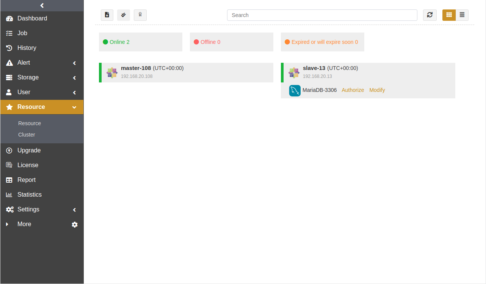
Check Storage Pool#
Log in to the ADPS console as an operator. Go to the Storage Pool page and verify that a storage pool is available. If no storage pool is available, contact the admin to create one and assign permissions to the operator.
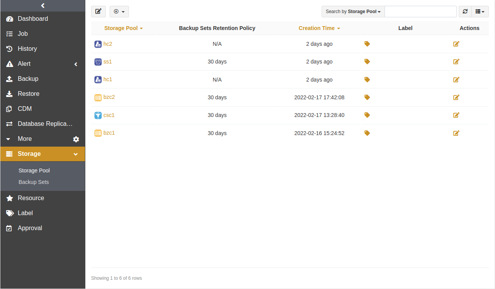
First Time Login#
Exchange 2013 MAPI authentication can be set to Basic or NTLM. NTLM authentication is used by default. However, when the Exchange server is limited by local security policies and group policies, NTLM authentication may not work. In this case, you can modify the authentication to Basic.
Before the first Exchange backup and restore, go to Resource and click Login beside the resource to log in to Exchange.

Enter the Exchange username and password.

Exchange Database Backup and Restore#
This chapter introduces how to back up Exchange databases.
Database Backup#
Prerequisites#
The ADPS agent has been installed. For details, see Install and Configure Agent.
The license has been activated and users have been authorized to operate the resource. For details, see Activate License and Authorize User.
Log in to the ADPS console as an operator.
Note:
Exchange database backup supports Windows 2000 and later versions. To back up Exchange 2010 and later versions, a backup and restore account should be configured first. The account configuration is the same as the Exchange mailbox backup and restore account.
Backup#
Click Backup. Select the Exchange host and instance. In the pop-up window, enter the operating system username and password when the version is older than Exchange 2010, while for Exchange 2010 and later, enter the username and password of the configured backup and restore account.

Select a Backup Type and the databases that you want to back up.

Note:
Backup method:
Exchange 2003 and 2007 support streaming-style backup and VSS backup.
Exchange 2010 and 2007 support mailbox backup and VSS backup.
Exchange 2013 and 2016 support VSS backup.
The backup object of streaming-style backup is the storage in the database (storage group), while the backup object of VSS backup is the database (storage group).
The Windows 2000 operating system does not support VSS backups.
Backup type:
Backup types support full backup, incremental backup, and log backup.
Streaming-style backup supports full backup and log backup. VSS backup supports full backup and incremental backup.
Before the creation of log backups and incremental backups, a full backup should be completed first as their base.
Backup source:
The unmounted storage on Windows 2000 will be displayed in the expanded tree. Be careful not to select the unmounted storage.
Select a Backup Target. The target can be a standard storage pool, de-duplication storage pool, tape library pool, object storage pool, and LAN-Free pool.
Note: Incremental backup, log backup, and their base full backups cannot be stored in different storage pools.

Select a Backup Schedule to set the execution time for the backup job. For details, see Backup Schedule Operation. It is recommended to perform a full backup on a weekly basis.

Set Backup Options, including common and advanced options.
Common options:

Compression: The Fast option is enabled by default.
Channels: VSS-full backup and VSS-incremental backup support this option. The value ranges from 1 to 255.
Advanced options:
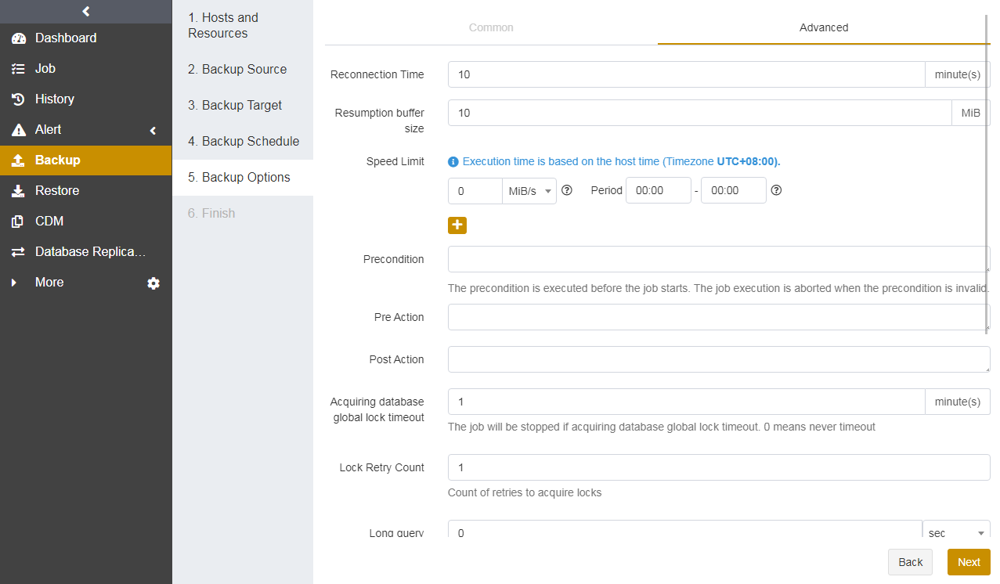
Reconnection time: This option supports 1 to 60 minutes. The job continues after the abnormal reset occurs in the network within the set time.
Speed limit: This option can limit data transfer speed or disk read and write speed. The unit can be MiB/s or KiB/s.
Precondition: The precondition is checked before the job starts. The job execution is aborted when the precondition is invalid.
Pre/Post action: The pre-action is executed after the job starts and before the resource is backed up or restored. The post-action is executed after the resource is backed up or restored.
Set a Job Name and confirm the job information. Click Submit.

Note:
If the admin has enabled the Job Approval feature, the job should be approved by the admin to start running.
Database Restore#
This chapter introduces how to restore Exchange databases. When a logical error or disaster occurs in an Exchange database, you can restore the database to a specified point-in-time state using Timepoint Restore. The database can be restored to the original host or a different host.
Prerequisites#
A backup job has been completed. For details, see Database Backup.
To restore to another host, install an agent on that host, activate its license, and assign the permissions.
Note:
Before you restore an Exchange database (storage group), ensure that the database (storage group) is existed and has enabled the This database can be overwritten by a restore option in the properties. If the database (storage group) does not exist, create it first.
Exchange database restore will automatically apply the logs on the disks. To restore the database to a backup point in time, delete the corresponding database log file manually.
Restore#
Click Restore. Select Exchange host and resource. Click Next.
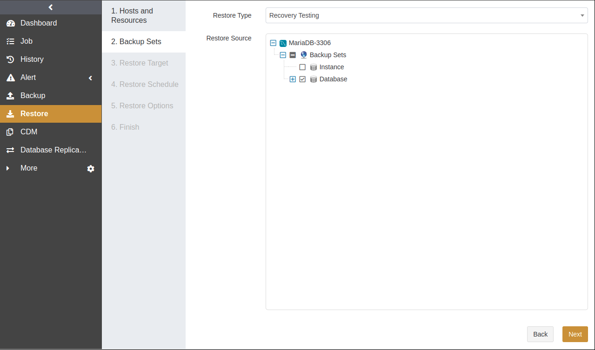
Select Timepoint Restore and a Database. Select a Restore Point in Time. Click Next.
Note:
If the backup method of the backup set is streaming-style, select the storage that you want to restore, which is not required for VSS.

Restore to backup state: The database can be restored to a specific backup state.
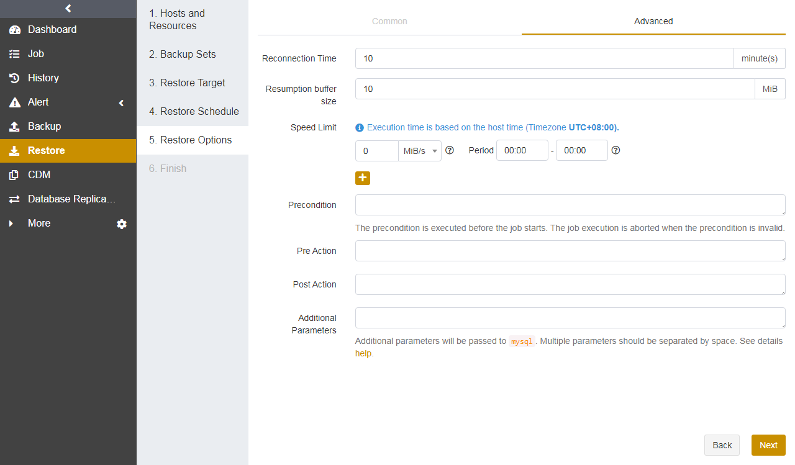
Select a Restore Target. Select an Exchange instance resource with the same version. The database can be restored to the original host or a different host. Click Next.

Set the Restore Schedule. Timepoint restore supports only immediate and one-time schedule types. Click Next.

Set Restore Options, including common and advanced options.
Common options:

Restore database: You can select to overwrite the original database or create a new database.
Database is forbidden to overwrite: You can set the restore operation when the database cannot be overwritten.
Channels: The backup sets of VSS-full backups and VSS-incremental backups support this option. The channels for the restore job cannot exceed the number during the backup.
Automatically mount database: If this option is enabled, the database (storage group) will be automatically mounted after the successful restore.
Advanced options

Reconnection Time: This option supports 1 to 60 minutes. The job continues after the abnormal reset occurs in the network within the set time.
Speed Limit: You can set the limit for data transfer speed or disk read and write speed. The unit can be MiB/s or KiB/s.
Precondition: The precondition is checked before the job starts. The job execution is aborted when the precondition is invalid.
Pre/Post action: The pre-action is executed after the job starts and before the resource is backed up or restored. The post-action is executed after the resource is backed up or restored.
Set a Job Name and confirm the job information. Click Submit.

Exchange Mailbox Backup and Restore#
The Exchange account used for mailbox backup should have full access permission to the Exchange mailbox. Therefore, we recommend creating a dedicated account for the mailbox backup and restore on the Exchange host.
Note:
Mailbox backup supports EWS backup and MAPI backup.
Before the MPAI backup and restore, install MAPI (software name: ExchangeMapiCdo.EXE) on the Exchange host.
EWS mailbox backup and restore support Exchange 2010/2013.
MAPI mailbox backup and restore support Exchange 2007/2010.
Mailbox Backup#
Click Backup. Select the Exchange host and instance.
Select a Backup Type and mailboxes that you want to back up. You can search accounts in the search field. EWS mailbox backup can only back up the folders visible in Outlook Top of Information Store, while MAPI mailbox backup can back up the entire mailbox directory.

Select a Backup Target. The target can be a standard storage pool, de-duplication storage pool, tape library pool, object storage pool, and LAN-Free pool.
Select a Backup Schedule to set the execution time for the backup job. For details, see Backup Schedule Operation.
Set Backup Options, including common and advanced options.
Common options:
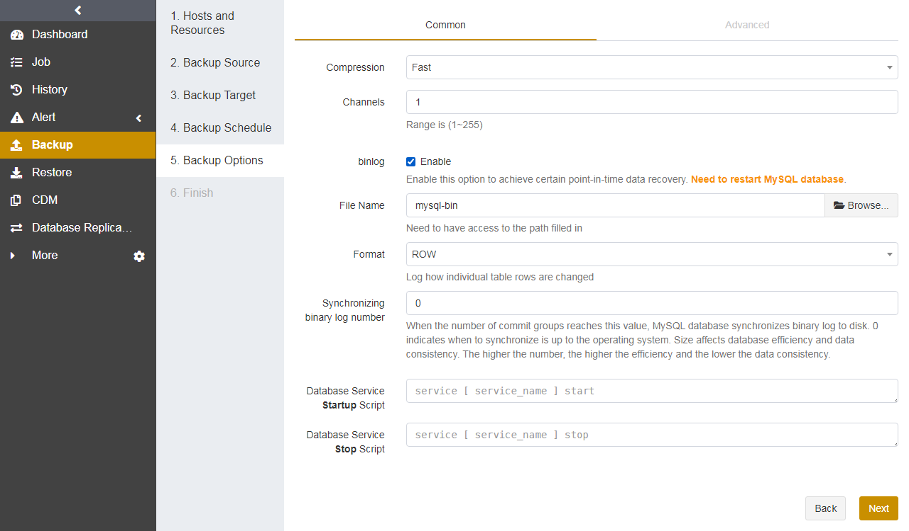
Compression: The Fast option is enabled by default.
Advanced options:
Reconnection time: This option supports 1 to 60 minutes. The job continues after the abnormal reset occurs in the network within the set time.
Speed limit: You can set the limit for data transfer speed or disk read and write speed. The unit can be MiB/s or KiB/s.
Precondition: The precondition is checked before the job starts. The job execution is aborted when the precondition is invalid.
Pre/Post action: The pre-action is executed after the job starts and before the resource is backed up or restored. The post-action is executed after the resource is backed up or restored.
Set a Job Name and confirm the job information. Click Submit.
Note:
If the admin has enabled the Job Approval feature, the job should be approved by the admin to start running.
Mailbox Recovery#
Click Restore. Select Exchange host and resource. Click Next.
Select a Restore Type and Mailbox. Specify a restore point in time, and then select the backup sets from the list. Click Next. EWS mailbox recovery can only recover the file folders in the Top of Information Store, while MAPI mailbox recovery can recover the entire mailbox directory.
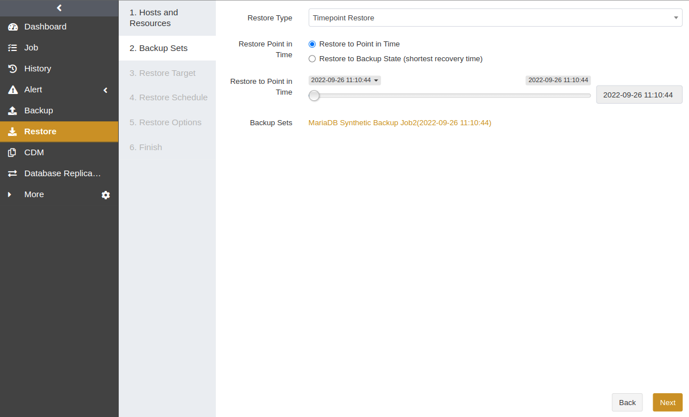
Select a Restore Target. Select an Exchange instance resource with the same version.
Set the Restore Schedule. Only immediate and one-time schedule types are supported. Click Next.
Set Restore Options, including common and advanced options.
Common options:
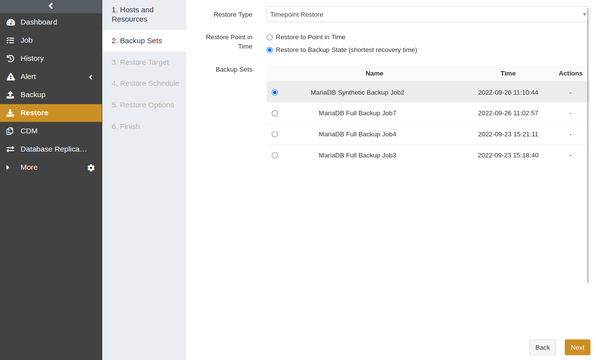
Target mailbox: EWS mailbox recovery can recover data to a specified target mailbox.
Restore directory: For EWS mailbox recovery, you can restore to the original directory or a specified directory in the Top of Information Store. For MAPI mailbox recovery, you can restore to the original directory or a new directory.
Channels: EWS mailbox recovery supports this option.
Note:
To restore a MAPI mailbox to a new directory, specify the first directory as Top of Information Store, e.g., Top of Information Store/restore, so that the mailbox user can see the recovered mails after the recovery.
Advanced options:

Reconnection time: This option supports 1 to 60 minutes. The job continues after the abnormal reset occurs in the network within the set time.
Speed limit: You can set the limit for data transfer speed or disk read and write speed. The unit can be MiB/s or KiB/s.
Precondition: The precondition is checked before the job starts. The job execution is aborted when the precondition is invalid.
Pre/Post action: The pre-action is executed after the job starts and before the resource is backed up or restored. The post-action is executed after the resource is backed up or restored.
Set a Job Name and confirm the job information. Click Submit.
Note:
If the admin has enabled the Job Approval feature, the job should be approved by the admin to start running.
Exchange DAG Database Backup and Restore#
Database Backup#
Prerequisites#
The ADPS agent has been installed. For details, see Install and Configure Agent.
The license has been activated and users have been authorized to operate the resource. For details, see Activate License and Authorize User.
Log in to the ADPS console as an operator.
Note:
Exchange DAG database backup is performed on the node where the Exchange MBX role is installed. The node should be configured with an account for the backup and restore. The account configuration is the same as the account for Exchange mailbox backup and restore.
Backup#
Click Backup. Select the host and resource with the Exchange MBX role. In the pop-up window, enter the username and password of the operating system.

Select a Backup Type and databases.

Note:
Backup method:
VSS backup
Backup type:
VSS backup supports full backup and incremental backup.
Before the creation of incremental backups, a full backup should be completed first as the base.
Backup source:
If the database on the current node is a passive database copy, it will be skipped in the backup process.
Select a Backup Target. The target can be a standard storage pool, de-duplication storage pool, tape library pool, object storage pool, and LAN-Free pool.

Select a Backup Schedule to set the execution time for the backup job. For details, see Backup Schedule Operation. It is recommended to perform a full backup on a weekly basis.

Set Backup Options, including common and advanced options.
Common options:
Compression: The Fast option is enabled by default.
Channels: VSS-full backups and VSS-incremental backups support this option. The value ranges from 1 to 255.
Advanced options:
Reconnection time: This option supports 1 to 60 minutes. The job continues after the abnormal reset occurs in the network within the set time.
Speed limit: You can set the limit for data transfer speed or disk read and write speed. The unit can be MiB/s or KiB/s.
Precondition: The precondition is checked before the job starts. The job execution is aborted when the precondition is invalid.
Pre/Post action: The pre-action is executed after the job starts and before the resource is backed up or restored. The post-action is executed after the resource is backed up or restored.
Set a Job Name and confirm the job information. Click Submit.
Note:
If the admin has enabled the Job Approval feature, the job should be approved by the admin to start running.
Database Restore#
Prerequisites#
A backup job has been completed. For details, see Database Backup.
To restore to another host, install an agent on that host, activate its license, and assign the permissions.
Note:
Before you restore an Exchange DAG database, ensure that the database is existed and has enabled the This database can be overwritten by a restore option in the properties. If the database is not available, create it first.
Before you restore the database, it is recommended to delete other replicated databases first, then back up the content in the folder where the database resides (It refers to the folder of xx.edb. You can right-click the properties of the database to find the folder) to other location, and clean up the folder.
Restore#
Click Restore. Select the host and resource with the Exchange MBX role. Click Next.
Select Timepoint Restore and a Database. Select a Restore Point in Time. Click Next.
Select a Restore Target. Select the Exchange instance resource with the same version. The database can be restored to the original host or a different host. Click Next.
Set a Restore Schedule. Timepoint restore supports only immediate and one-time schedule types. Click Next.
Set Backup Options, including common and advanced options.
Common options:
Restore database: You can select to overwrite the original database or create a new database.
Database is forbidden to overwrite: You can set the restore operation when the database cannot be overwritten.
Channels: The backup sets of VSS-full backups and VSS-incremental backups support this option. The channels for the restore job cannot exceed the number during the backup.
Automatically mount database: If this option is enabled, the database (storage group) will be automatically mounted after the successful restore.
Advanced options:
Reconnection time: This option supports 1 to 60 minutes. The job continues after the abnormal reset occurs in the network within the set time.
Speed limit: You can set the limit for data transfer speed or disk read and write speed. The unit is MiB/s.
Precondition: The precondition is checked before the job starts. The job execution is aborted when the precondition is invalid.
Pre/Post action: The pre-action is executed after the job starts and before the resource is backed up or restored. The post-action is executed after the resource is backed up or restored.
Set a Job Name and confirm the job information. Click Submit.
Note:
If the admin has enabled the Job Approval feature, the job should be approved by the admin to start running.
Wait for the restore job to complete.
After the database is mounted successfully, create a database availability group.
Exchange DAG Mailbox Backup and Restore#
Mailbox Backup#
Click Backup. Select the host and instance with the Exchange CAS role. In the pop-up window, enter the username and password of the configured Exchange mailbox backup and restore account.
Select a Backup Type and mailboxes that you want to back up. You can search accounts in the search field. EWS mailbox backup can only back up the folders visible in Outlook Top of Information Store, while MAPI mailbox backup can back up the entire mailbox directory.

Select a Backup Target. The target can be a standard storage pool, de-duplication storage pool, tape library pool, object storage pool, and LAN-Free pool.
Select a Backup Schedule to set the execution time for the backup job. For details, see Backup Schedule Operation.
Set Backup Options, including common and advanced options.
Common options:
Compression: The Fast option is enabled by default.
Advanced options:
Reconnection time: This option supports 1 to 60 minutes. The job continues after the abnormal reset occurs in the network within the set time.
Speed limit: You can set the limit for data transfer speed or disk read and write speed. The unit can be MiB/s or KiB/s.
Precondition: The precondition is checked before the job starts. The job execution is aborted when the precondition is invalid.
Pre/Post action: The pre-action is executed after the job starts and before the resource is backed up or restored. The post-action is executed after the resource is backed up or restored.
Set a Job Name and confirm the job information. Click Submit.
Note:
If the admin has enabled the Job Approval feature, the job should be approved by the admin to start running.
Mailbox backup can only be performed on an Exchange CAS node.
After you add new mailboxes, restart the ADPS Agent service.
Mailbox Recovery#
Click Restore. Select the host and instance with the Exchange CAS role. Click Next.
Select a Restore Type and Mailbox. Specify a restore point in time, and then select the backup sets from the list. Click Next. EWS mailbox recovery can only recover the file folders in the Top of Information Store, while MAPI mailbox recovery can recover the entire mailbox directory.

Select a Restore Target. Select the Exchange instance resource with the same version.
Set a Restore Schedule. Only immediate and one-time schedule types are supported. Click Next.
Set Backup Options, including common and advanced options.
Common options:
Target Mailbox: EWS mailbox recovery can recover data to a specified target mailbox.
Restore Directory: For EWS mailbox recovery, you can restore to the original directory or a specified directory in the Top of Information Store. For MAPI mailbox recovery, you can restore to the original directory or a new directory.
Channels: EWS mailbox recovery supports this option.
Advanced options:
Reconnection Time: This option supports 1 to 60 minutes. The job continues after the abnormal reset occurs in the network within the set time.
Speed Limit: You can set the limit for data transfer speed or disk read and write speed. The unit is MiB/s.
Precondition: The precondition is checked before the job starts. The job execution is aborted when the precondition is invalid.
Pre/Post action: The pre-action is executed after the job starts and before the resource is backed up or restored. The post-action is executed after the resource is backed up or restored.
Set a Job Name and confirm the job information. Click Submit.
Note:
If the admin has enabled the Job Approval feature, the job should be approved by the admin to start running.
Manage Jobs#
On the Job page, you can view the backup and restore job information of all agents, start, modify, clone, and delete the jobs.
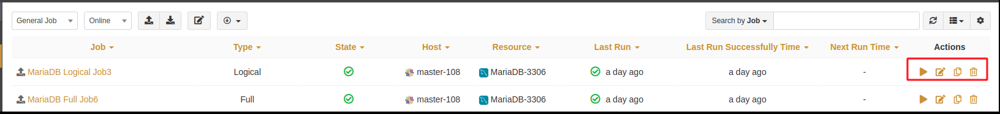
Start: Click
 to start the job immediately.
to start the job immediately.Modify: Click
 to modify the basic job information, backup/restore schedule, and backup/restore options.
to modify the basic job information, backup/restore schedule, and backup/restore options.Clone: Click
 to create multiple similar backup jobs.
to create multiple similar backup jobs.Delete: Click
 to access the confirmation window. Click OK to delete the job.
to access the confirmation window. Click OK to delete the job.
Backup Protection Strategy#
Backup Schedule Operation#
ADPS provides six types of backup schedules.
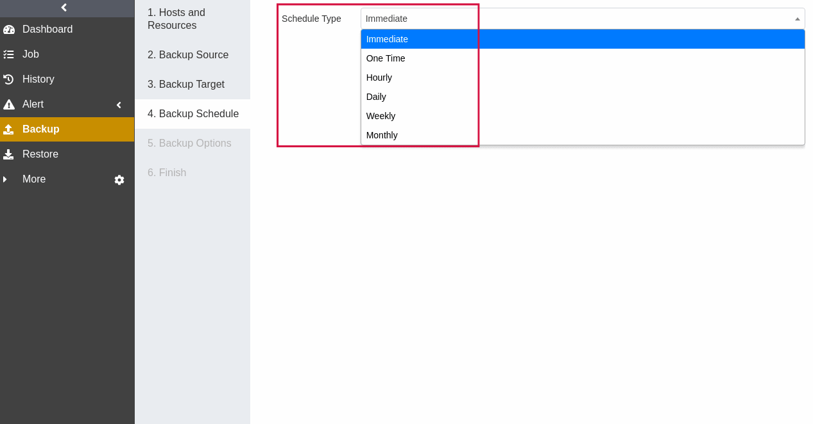
Immediate: The job immediately starts to run after it is submitted.
One Time: After the job is created, it will be in an idle state and start to run when the specified Start time is reached.
Hourly: After the job is created, the first run will be initiated at the specified Start Time. The next run will be executed after a specified number of hours/minutes within the time range according to the setting. The value ranges from 1 to 24 hours or 1 to 60 minutes.
Daily: After the job is created, the first run will be initiated at the specified Start Time. The next run will be executed after a specified number of days according to the setting. The value is an integer between 1 and 5.
Weekly: After the job is created, the first run will be initiated at the specified Start Time. The next run will be executed after a specified number of weeks according to the setting. You can specify which day of the week to run the job.
Monthly: The job runs on the specified days of some months at the specified time. For example, you can set the job to run on January 1 and June 1 at 20:00. Or you can set it to run on the first Monday of every month at 20:00.
Example: Run the job every two weeks on Friday at 18:00
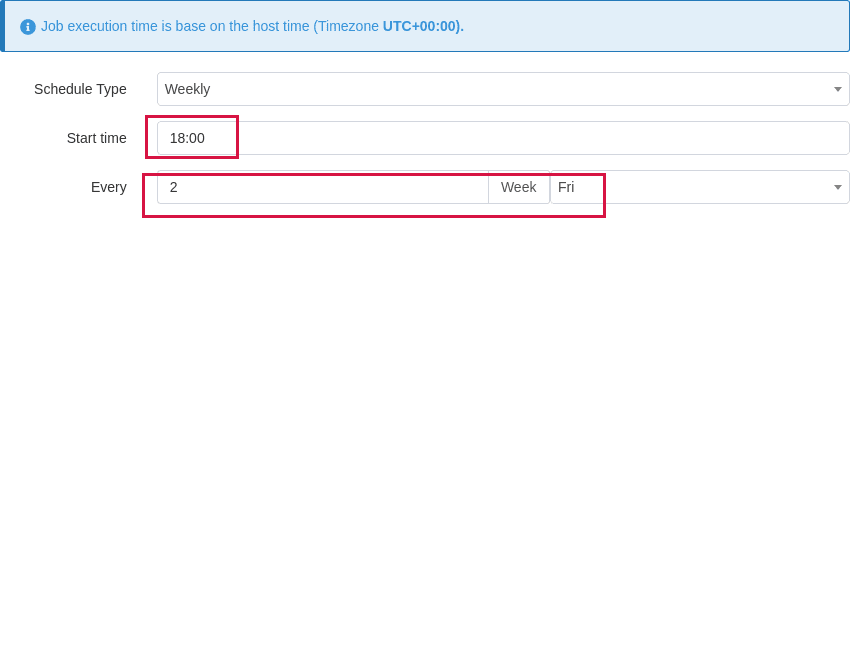
The execution time will be:
If the current time is Friday at 17:00, the execution time will be Friday at 18:00 (the current day).
If the current time is Thursday at 17:00, the execution time will be Friday at 18:00 (the next day).
If the current time is Saturday at 17:00, the execution time will be next Friday at 18:00.
After the first run is completed, the job will start automatically at 18:00 on Friday every two weeks.
Backup Strategy Advice#
Exchange backup types include VSS-full backup, VSS-incremental backup, streaming-full backup, streaming-incremental backup, EWS mailbox backup, and MAPI mailbox backup. It is recommended to formulate the following backup strategy according to different situations such as network bandwidth, business data volume, security requirements, and the amount of data loss that you can tolerate.
Run a Full Backup once a week when the application traffic is small to ensure that you have an RTO of one week.
After that, you can run an Incremental Backup every day to reduce the backup time and ensure that you have an RPO of one day.
If the database supports log backup, you can run a Log Backup hourly to ensure that the RPO can reach the second level. For example, you can run a log backup every 2 hours.
Perform a Mailbox Backup once a week when mail growth is small.
Avoid using the following strategies:
Only perform full backups.
Perform a full backup followed by all incremental or log backups.
Limitations#
Function |
Limitation |
|---|---|
Resource |
· ADPS supports Exchange on Windows 2000 and later. |
Backup |
· The Exchange database backup supports Windows OS 2000 and later. To back up databases on Exchange 2010 and later, a backup and restore account should be configured first. The account configuration is the same as the Exchange mailbox backup and restore account. |
Restore |
· Before you restore an Exchange database (storage group), ensure that the database (storage group) is existed and has enabled the This database can be overwritten by a restore option in the properties. If the database (storage group) does not exist, create it first. |